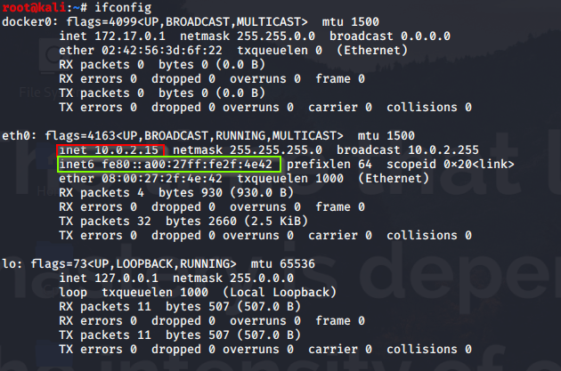

IP Addresses
An Internet Protocol address (IP address) is a numerical label assigned to each device connected to a computer network that uses the Internet Protocol for communication.
If we understand the total number of things on the Earth that may be connected to the Internet we can estimate the number of IP addresses we need.
It serves two main functions:
1) Host or Network interface identification
2) Location Addressing
Que) How to check your IP?- Open Terminal
-
- ifconfig (Linux Distro)
- ipconfig (Windows Distro)

Internet Protocol version 4 (IPv4) defines a IP address as a 32-bit decimal number (4,29,49,67,296 Addresses)
Ex: 10.0.2.15 is IPv4
However,because of the growth of the Internet and the depletion of available IPv4 addresses,a new version of IP (IPv6),using 128 bit alphanumeric(3.4028236692093846346337460743177e+38 addresses),was standerdized.
Ex: fe80::a00:27ff:fe2f:4e42 is IPv6
Que) If IPv4 is outnumbered then why we still able to use it?
It's because of technology named Network Address translation(NAT). We use private IP address and share it with all our devices and use a single IP to communicate from outer world.

The way NAT works is when a corporate computer with a private IP address sends a packet to a public IP address outside the corporate network, it first goes to the NAT device. The NAT notes the packet’s source and destination addresses in a translation table.
The NAT changes the source address of the packet to the public-facing address of the NAT device and sends it along to the external destination. When a packet replies, the NAT translates the destination address to the private IP address of the computer that initiated the communication. This can be done so that a single public IP address can represent multiple privately addressed computers.
When will IPv4 be “shut off”?
Most of the world “ran out” of new IPv4 addresses between 2011 and 2018 – but we won’t completely be out of them as IPv4 addresses get sold and re-used (as mentioned earlier), and any leftover addresses will be used for IPv6 transitions.
There’s no official switch-off date, so people shouldn’t be worried that their internet access will suddenly go away one day. As more networks transition, more content sites support IPv6 and more end users upgrade their equipment for IPv6 capabilities, the world will slowly move away from IPv4.
FOR NAT CHECK:
https://www.youtube.com/watch?v=FTUV0t6JaDA
FOR Subnetting CHECK:
https://www.youtube.com/watch?v=Ct4PU6CyvTQ&list=PLh94XVT4dq02frQRRZBHzvj2hwuhzSByN&index=4
Conclusion
Ek Org ek public ip leti hai(IPv4)(for router) fir using NAT apne andar private ip de deti hai.....jiski wo subnetting bhi kar sakti hai